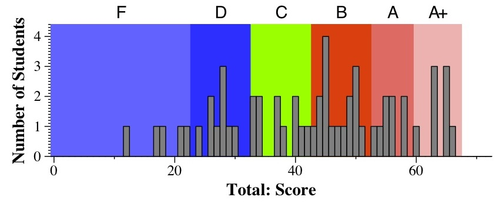
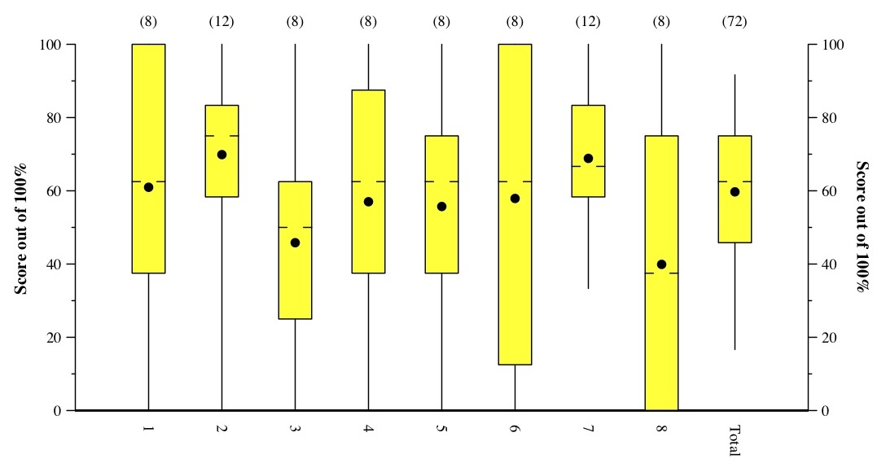

CS140 Midterm Exam: Spring, 2012
Scores
It was a long test, but overall a pretty good one. Yes, you had to have your programming
shoes on, but what else is this class about?
As always, I assign letter grades to numerical score. This one is straightforward:
- 60 - 68: A+
- 53 - 60: A
- 42 - 53: B
- 32 - 42: C
- 23 - 32: D
- Below 23: F

Tukey Plots:
Lines go to min & max. The box is from the first quartile to the third quartile.
The hash marks denote the median. The dot denotes the mean.
